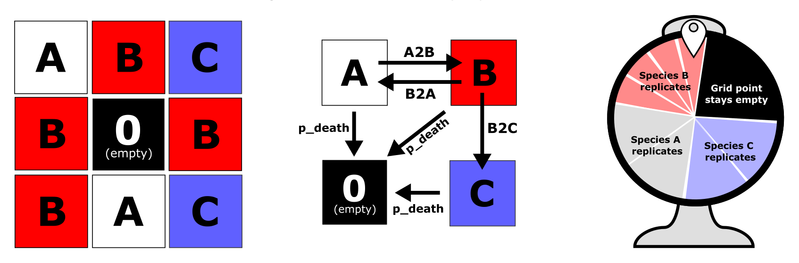

|
Eight (or fewer) individuals surrounding an empty grid point will compete for replication. Individuals of species A are replicated by B with rate B2A. The more Bs are present, the higher the odds for A). Individuals of species B are replicated by type A with rate A2B. C receives replication from type B with rate B2C, but does not return the favour. I.o.w.:, A and B are mutualist species, with C parasitising on mutualist B.
The winner of all these interactions is decided according to a roulette wheel, with individuals having slices proportional to how much help they received. A constant called stay_empty determines the size of the black area in the roulette wheel, determining the chance that nobody replicates. |
 |